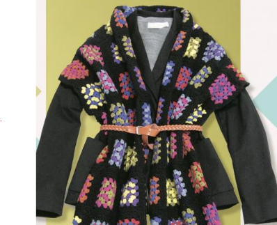
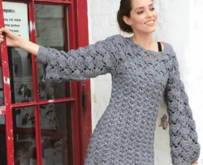
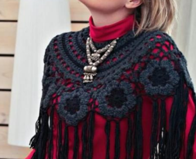
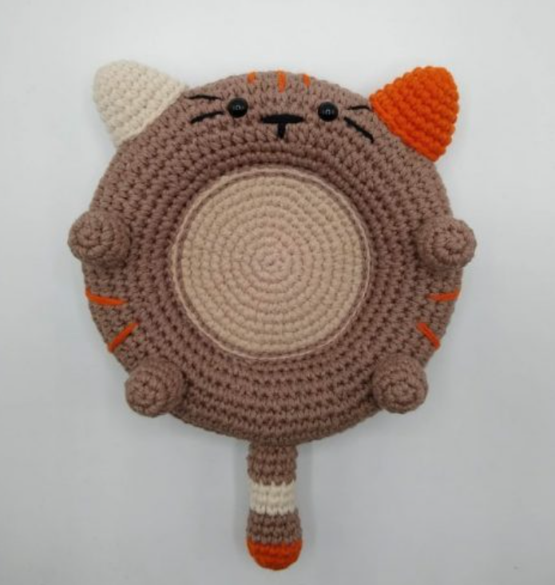
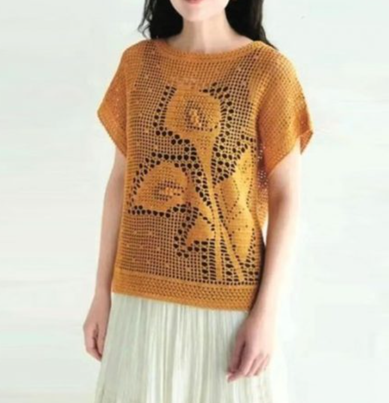
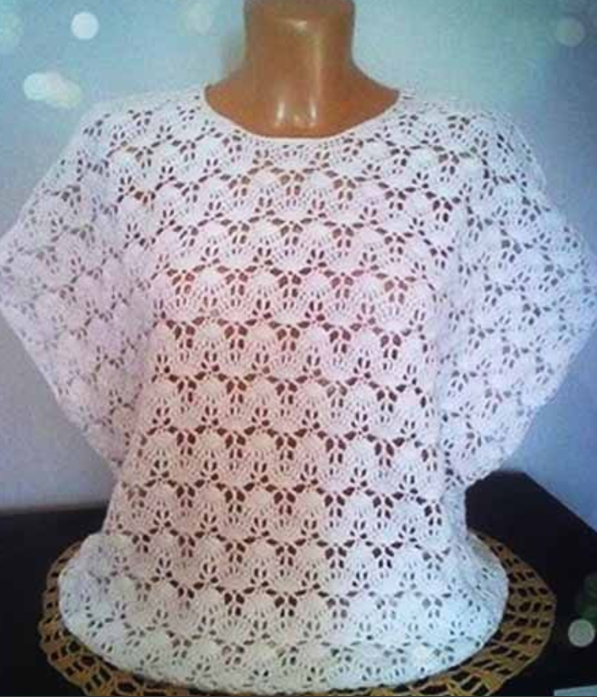
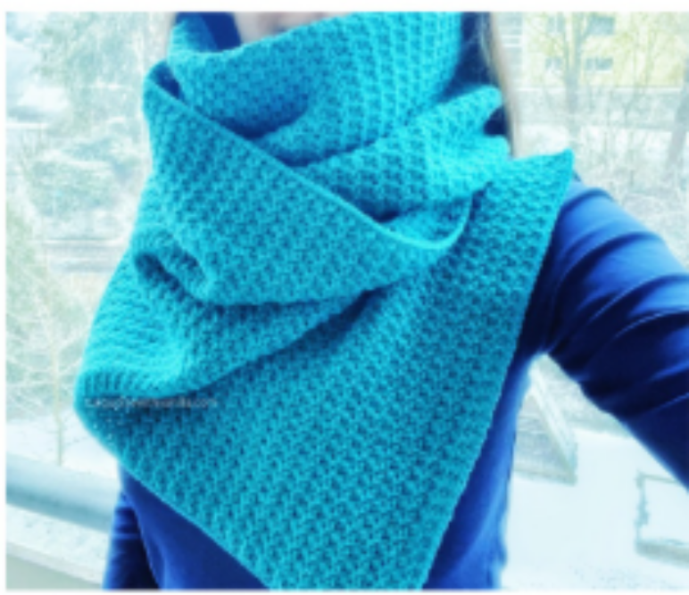

Поиск

Шарф с узорами из цветных квадратов крючком

Туника с широкими ажурными рукавами крючком

Пелелина с узором из цветов с бахромой крючком

Нежно-розовый пуловер

Многофункциональная подставка котик, связанный крючком

Летний джемпер в филейной технике

Летний джемпер

Синий шарф с простым узором